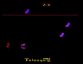

|

Review

Game Type: 2D Arcade
OK, how the devil do you classify THIS? You're a disembodied mouth flying
around the screen, grabbing food out of the air as it flies by and dodging
the unpalatable purple pickles. Get as many calories as you can, but eat
6 pickles and it's game over.
Gameplay: 97/100
Gameplaywise Fast Food can be thought of as a shooter without the shooting.
Food flies past at ever-increasing speeds, and you'll need good eyes and
quick steering to catch the tastiest morsels and avoid the purple pickles.
In later rounds the action gets insanely intense.
Graphics: 95/100
Your "character" is animated very well, and though there's no scenery the game
doesn't really need it. At times you'll wonder "what is that thing, a
cheeseburger or a sundae?" but the graphic resolution is the best the 2600
has to offer.
Sound: 50/100
About the only sound you hear during the game is the munching as you
rack up points. I'm used to it but I quite clearly remember Mom and Dad
telling me repeatedly just how annoying it was, so I'll take their word...
When you beat a round or lose the game utters these unidentifiable
warbles, which I can also imagine getting annoying to some after a while.
I personally love the game's sound because I love the game, but I have to
provide this caveat to others.
Overall: 95/100
My all-time favorite 2600 game. Fast Food was a major factor in my decision
to get another Atari a couple years ago. A game you still hunger for after
going cold turkey for 8 years has to be pretty addictive. Anyone who's after a
fast-paced game will eat this one up. (Somebody stop me!) Thank you.
Please drive through.
|